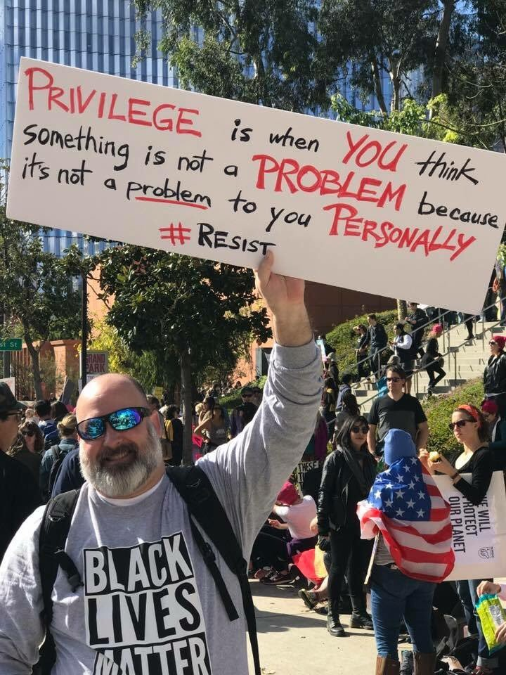

FOREVER REBLOG THE PRIVILEGE-POSTER GUY
“After taxes, I can’t afford that beach house in Majorca that my wife really wanted. This makes me very sad. But I’m sure you don’t care about that kind of problem, right, you privileged asshole? Fucking poors.”
…I mean, if this guy actually means it, I guess I have a lot of respect for that brand of insane blue-and-orange hyperconsistent SJ. But somehow I’m guessing that, as far as he’s concerned, only certain kinds of problems count. Y’know, kind of like what the Privileged People think.